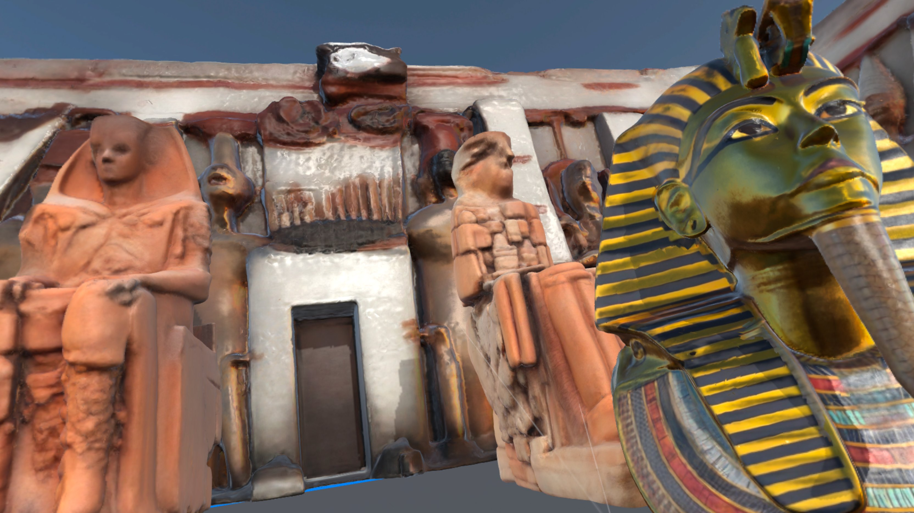
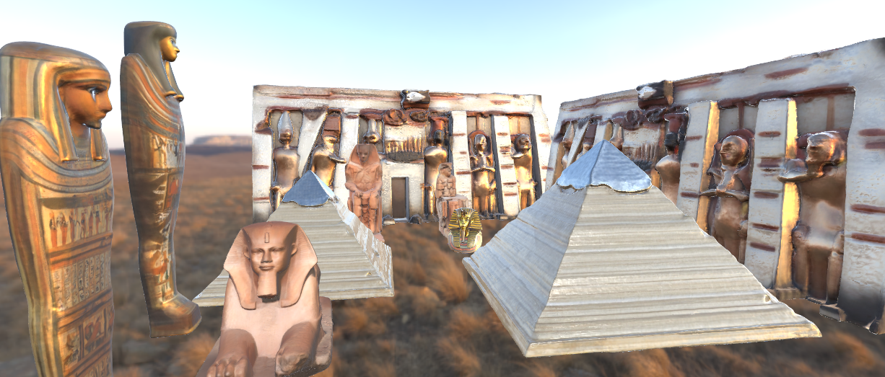

WORKS
작품
사막의 노을처럼 따뜻한 XR 작품들을 소개합니다.Warm XR works, like a sunset over the desert.

작품 1 · 투탕카멘의 황금 가면Golden Mask of Tutankhamun
소년 파라오 투탕카멘의 황금 가면을 3D로 재현한 작품입니다. 금빛 줄무늬와 세밀한 질감까지 살려 표현했습니다.A 3D recreation of the boy pharaoh's golden mask, capturing its gilded stripes and fine texture.

작품 2 · 고대 이집트 석관Ancient Egyptian Sarcophagi
화려한 채색 문양이 새겨진 이집트 석관 한 쌍을 모델링했습니다. 앞면과 옆면의 상형문자 장식을 꼼꼼히 담았습니다.A pair of richly painted sarcophagi, modeled with hieroglyphic details on every side.

작품 3 · 사막의 수호자 스핑크스Sphinx, Guardian of the Desert
피라미드를 지키는 스핑크스를 3D로 제작한 작품입니다. 오랜 세월 풍화된 돌의 질감을 살리는 데 집중했습니다.The Sphinx guarding the pyramids, focused on the feel of stone weathered by time.

작품 4 · 사막의 피라미드Desert Pyramid
층층이 쌓인 돌계단과 빛나는 정상부가 돋보이는 피라미드입니다. VR 전시 공간의 중심 랜드마크로 배치했습니다.A pyramid of layered stone steps and a shining capstone — the landmark at the heart of the VR exhibition.

작품 5 · 아부심벨 대신전Great Temple of Abu Simbel
람세스 2세의 거상이 늘어선 아부심벨 신전을 재현했습니다. 노을빛을 받은 웅장한 입구의 분위기를 담았습니다.The temple of Ramesses II with its colossal statues, bathed in sunset light.

작품 6 · 파라오의 거상Colossi of the Pharaoh
왕좌에 앉은 파라오의 거상 한 쌍을 3D로 제작한 작품입니다. 세월에 마모된 사암의 질감과 웅장한 스케일을 담았습니다.A pair of colossal seated pharaohs, capturing weathered sandstone and monumental scale.


작품 7 · 완성 3DFinal 3D Exhibition
지금까지의 작품들을 한 공간에 모아 완성한 3D 전시 장면입니다. 신전 입구와 전시 전체 공간을 함께 담은 최종 결과물입니다.The completed exhibition scene that gathers every work — the temple entrance and the full space in one view.